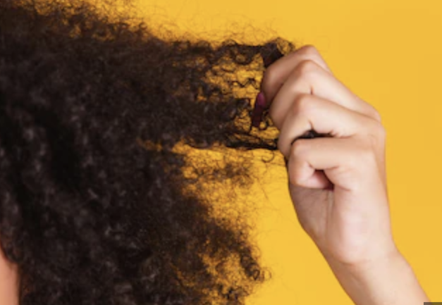
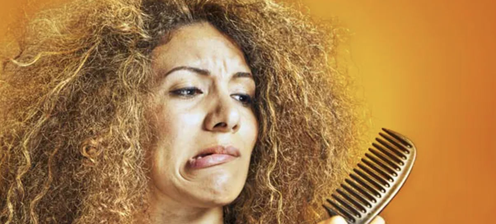
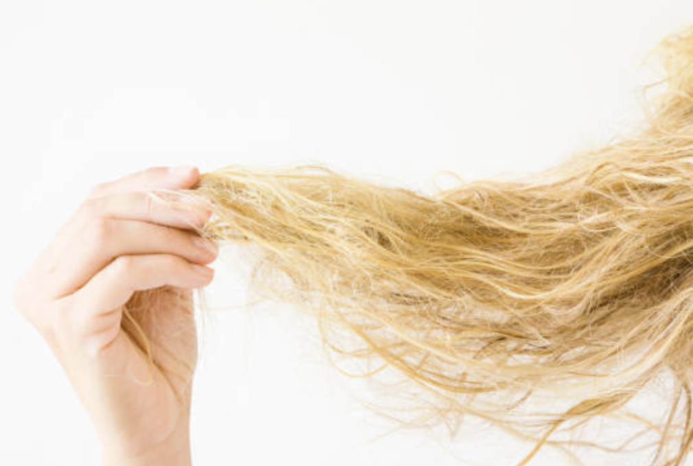
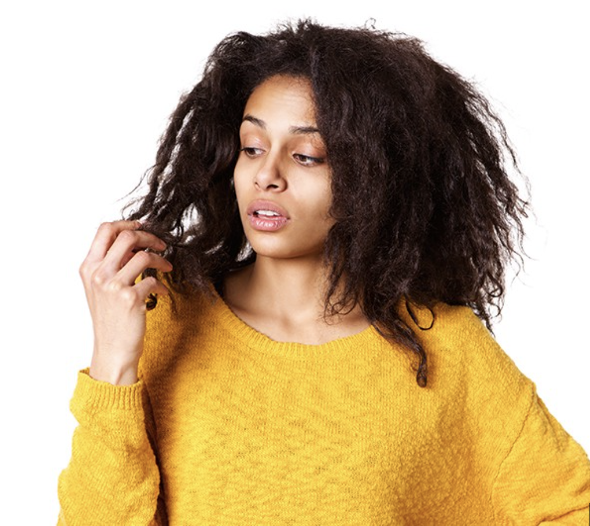

Dry and frizzy hair
Every person with curly hair faces the possible scenario of a dry scalp and dry hair. The curls stop the natural flow of oil down to the tips of the strand, preventing your hair from getting the adequate lubrication it needs for protection. The moisture barrier breaks and is unable to retain any moisture, which causes your hair to turn frizzy.
Hair Breakage and thinning
The sad truth is that when your hair dries out, it loses the strength that keeps it intact. Water escapes when the cuticle opens up, weakening the hair strand and leading to breakage. When you add brushing, styling, or blow-drying, it can further worsen the situation by affecting the hair follicles and leading to hair thinning.
Tangled hair and knotting
This is one of the most frequently seen curly hair problems. Because the natural oils don’t reach the tips of the strand, your dry hair becomes rough in texture. Due to this roughness, the hair strand adheres to the next one and gives you these tangles. You might have noticed that the texture of hair knots is different from the surrounding hair. Split ends
These usually accompany dry hair, which cracks open the hair strand and frays out the ends. The lack of hydration and protection causes the strands to weaken and break. Blow drying and chemical treatments can aggravate the situation. Lack of shine
Hair shine comes from the natural oils on your hair. You might have noticed the difference between curly shine and straight hair shine. It’s usually because the oils cannot reach the tips and coat them. The damaged cuticle can further worsen the look of your hair, especially if you’ve used heat treatment. Hair colour fades
If you don’t take care of naturally curly hair, it can directly cause a loss of hair colour. When the hair dries up and the cuticle is damaged, a certain amount of colour will leak out every time you wash your hair. Gradually you’ll notice your hair colour fading.Want product recommendations to fix your hair problems? Take our curated curl quiz.